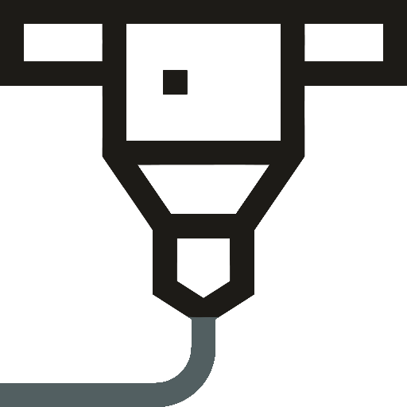

Alex Oroudjev
I am a
"Understanding why software fails is important, but the real challenge is
understanding
why software works. - Alexander Stepanov
About Me
Alex is the name and programming is the game. Let's get to know me quick and dirty. I'm a coding
connoisseur, a tech enthusiast, and a problem-solving wizard.
As a dedicated professional with a human touch, my journey in technology is driven by a blend of enthusiasm
for learning, a relentless pursuit of innovation, and a deep-seated passion for problem-solving. I was born
and raised in sunny Santa Barbara. Here I met and made personal connections with friends and colleagues.
Along my way I picked up several hobbies including hiking, swimming, cars, music,
coding, digital art, and 3D printing.
I have completed my education background starting in my hometown gaining my
first exposure to various subjects in Santa Barbara City College. It was there that I got my first
taste of both computer science and bio/chemistry. I obtained my Bachelor in Biochemistry under the
Chemistry department at University of California Santa Barbara. Working throughout all of my years
of high school and college career I have acquired a number of skills.
Hobbies

Coding:
I've had a passion for coding from a young age, seizing every opportunity to engage with technology.
My journey into programming commenced during high school, opening my eyes to the boundless
possibilities of code. Over the years, I've accumulated a diverse portfolio of projects
that showcase my multifaceted skills. Since this

Design/Images:
One of my passions lies in the realm of the fine arts. While I wouldn't claim to be a masterful
artist, my journey in this field has endowed me with both a solid understanding and a deep
appreciation for the arts. I typically keep my work private, as it's primarily a personal pursuit,
but you can explore some of my creations in my photo album or on my Instagram page.

3D Printing:
I also have a keen interest in 3D printing. Although I'm relatively new to this field, I've already
had the opportunity to craft simple yet functional pieces. I've found various applications for my
3D-printed creations, using them for miniature models, repairing and enhancing existing components,
and even constructing autonomous structures from scratch. This exciting journey into 3D printing has
opened up a world of creative possibilities for me. I am planning on making this a part of my next
coding project.
Projects
Here are some projects, complete or in progress. Most are in my Github,
have a look!
PalmPaths_v2 is a multiplatform application that I am currently developing. The aim of this
application is to use a combination of machine learning, computer vision, and data manipulation to
produce a 'reading' of the palm lines. This was initially built using just Kotlin for android
devices which I then ported to be a Flutter application for multiplatform use. This will showcase a
self-developed algorithm for extracting palm lines from a palm regardless of various palm
differences.
TrainEzPy is a module made up of a simple set of functions that helps setup and train an object
detection model. This currently works for specifically Pascal Voc formatted bounding boxes for
exactly one classification. While detecting multiple classes would be fairly easy to add in this
program (perhaps in the future), the point is to make it easy to quickly and effectively make a
simple model. I made this for my much larger project involving machine learning down below.
ReactSweeper is a simple minesweeper game I built to learn a bit of TypeScript and the new
functional component system of React. This game, although simple, was a fun small project that
allowed me to learn more about web development and design. Not much else to say about this one.
Education
In my "About" section, I've mentioned that my educational journey didn't take me far from home. Following
high school, I enrolled in Santa Barbara City College, often regarded as the top community college in the
nation. During my time there, I explored various academic avenues, transitioning from Biology to
Accounting/Economics, Chemistry, and eventually settling on Biochemistry when I transferred to the
University of California, Santa Barbara (UCSB).
UCSB provided me with an exceptional education, and I managed to keep my computer science skills sharp
through intermittent reading and personal projects. This strategy would prove invaluable in my pursuit of
advanced education.
My next academic venture led me into the world of Bioinformatics. I graduated top of the class with my Master
of Science degree at Brandeis University in March 2024. This experience has reignited my passion for machine
learning, data analysis, and coding as a whole, prompting me to pursue a career more focused on programming.